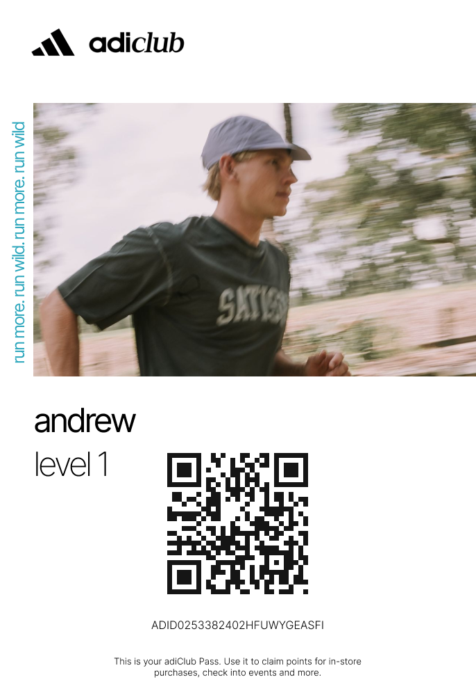
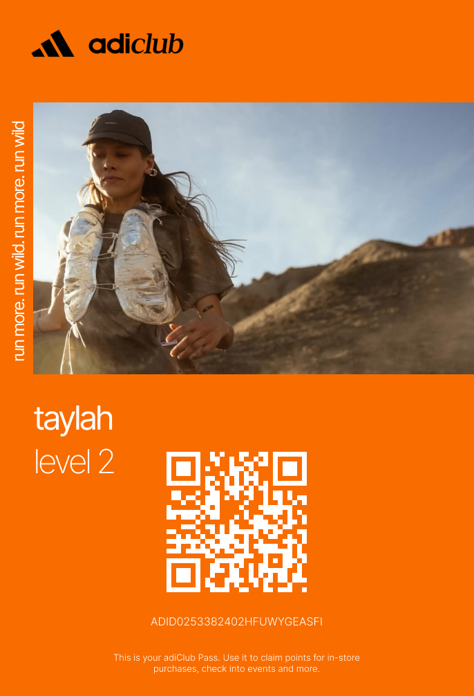

adiClub
Membership passes for Apple Wallet, where the colour tells you the level before you read a word.


What's on a pass
One column, read top to bottom: who it's from, who it's for, and the code that does the work.
- 01
WordmarkThe adiClub mark sits alone at the top, so the pass is recognisable in a stack of cards in Wallet.
- 02
PhotoA wide running photo carries the brand mood, with “run more. run wild.” set vertically along its edge.
- 03
Name and levelThe member's first name, lowercase and large, with the level directly beneath it.
- 04
QR codeThe code to scan, with the pass ID printed under it as a fallback.
- 05
What it's forOne line at the foot: claim points on in-store purchases and check in to events.
The level is the colour
Both passes share one layout. What changes between levels is the surface: level 1 is white with black type and a cyan tagline; level 2 turns the whole pass adiClub orange, with the type and the QR code reversed to white.
The level is said twice, once in words under the name and once in the colour of the entire pass, so it reads even before the text does.
Each level also carries its own photograph: a road run for level 1, a trail run for level 2.
Notes
A self-initiated concept: how adiClub's membership pass could look in Apple Wallet. It isn't an official adidas design, and it isn't affiliated with adidas.
Draft note: add when you made it, and any more levels or a back-of-pass design.